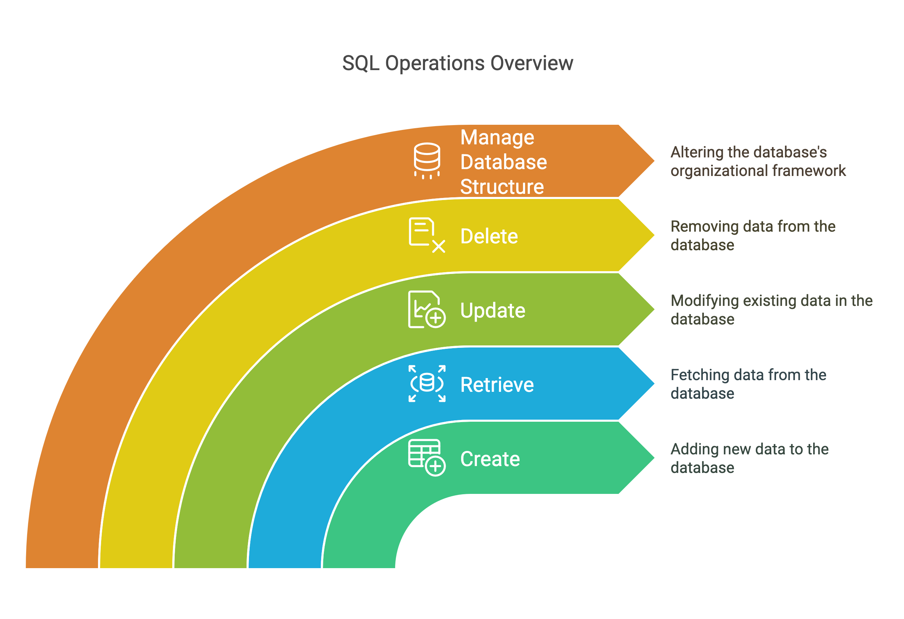

Databases are organized collections of structured information or data, typically stored electronically in a computer system. A relational database, specifically, organizes data into tables (or relations) with rows and columns. Each row represents a unique record, and each column represents a field in the record. This model is the foundation for most modern database systems used in business applications.
Key relational database concepts include:
NOT NULL, UNIQUE,
CHECK,
PRIMARY KEY, FOREIGN KEY.

Figure 1: Example Relational Model with Customers and Orders tables.
SQL (Structured Query Language) has a rich history that dates back to the 1970s:

SQL is the standard language used to communicate with relational databases. It allows users to create, retrieve, update, and delete data (CRUD operations), as well as manage the database structure itself. SQL commands are broadly categorized:
CREATE TABLE, ALTER TABLE, DROP TABLE).
SELECT, INSERT, UPDATE, DELETE).
GRANT, REVOKE).
While SQL is the standard language, different vendors implement RDBMS with variations in features, performance characteristics, licensing, and minor SQL syntax differences (dialects). It is important to be aware of the major players in the RDBMS market.
Key takeaways from the comparison:
Understanding these differences helps in choosing the right database and adapting SQL skills.
Enterprise Resource Planning (ERP) systems like Odoo rely heavily on robust database systems.
Specific Example: Odoo and PostgreSQL: Odoo uses PostgreSQL, leveraging features like schemas, rich data types (JSONB), transactions, and extensibility. The Odoo schema is complex, representing various interconnected business objects.
Understanding the database structure is crucial for product owners to:
In the following sessions, we will delve into practical SQL skills using the PostgreSQL database (specifically, an Odoo example schema) for hands-on exercises, highlighting variations in other systems where applicable.